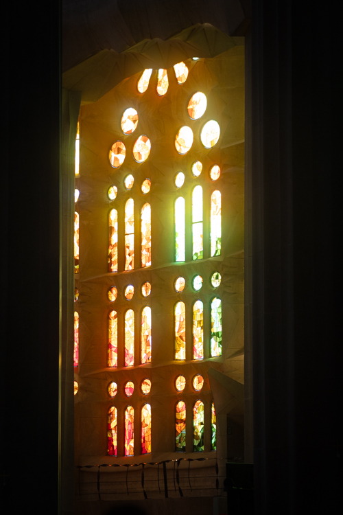

Same photo, same SDR base — only the gain map changes with the slider. These are real UltraHDR JPEGs.
View in Chrome or Safari on an HDR display
(MacBook Pro XDR / Pro Display) to see the actual pop; on a standard screen they look identical to SDR — which is exactly the fallback you want.
HDR · gain map

SDR fallback (your edit)
HDR rendering — drag the slider, toggle to compare the SDR fallback
Balanced
2.0× boost
Peak boost
2.00×
Headroom
1.00 stops
Target peak
406 nits
SDR fallback: identical to your edit knee starts at ~55% luma
1.25×1.5×1.75×2.0× ·Balanced2.5×3×3.5×4×
How to read this: the slider is the max highlight boost. Midtones and shadows stay put;
only highlights above the knee ramp up. 2.0× (Balanced) is the proposed default.
Tip for your exports: pull Highlights/Whites back slightly in Lightroom so the brightest spots aren't pure-white —
the pop has more room and looks more natural.